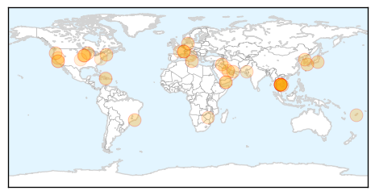
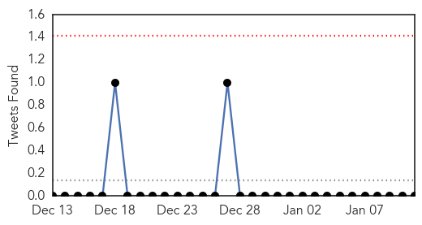

Unknown
30-Day Web Trend
0 alerts, 0 warnings

30-Day Twitter Trend
1 alerts, 0 warnings

Article Locations
Article Confidences

Top Articles:
- 0.972
- 212 Cambodians contract HIV from contaminated medical equipment
- 0.969
- Flu hits hard at care facilities for the elderly
- 0.969
- 212 infected with HIV due to contaminated equipment in Cambodia
- 0.959
- 212 Cambodians Infected With H.I.V. Due To Contaminated Medical Equipment
- 0.956
- Keeping your family safe during flu season
- 0.933
- Farsnews
- 0.929
- Cambodia finds 212 with HIV where unlicensed medic operated
- 0.917
- Chicago Tribune
- 0.917
- Chicago Tribune
- 0.917
- Chicago Tribune
- 0.917
- Chicago Tribune
- 0.917
- Chicago Tribune
- 0.917
- Chicago Tribune
- 0.917
- Chicago Tribune
- 0.917
- Chicago Tribune
- 0.868
- Cambodia finds 212 with HIV
- 0.866
- S.Korea President Park says no pre-condition to summit with North's Kim
- 0.857
- Tainted needles blamed, National, Phnom Penh Post
- 0.852
- LATEST: CDC continues to investigate listeria linked to caramel apples; at least six people have died
- 0.829
- Number of STDs reported increased 41 per cent in Abu Dhabi in 2014
- 0.816
- Ministry Monitors Spill Effect
- 0.803
- Seven Confirmed Leptospirosis Cases In Pahang
- 0.783
- New Recommendation for Pneumonia Vaccine
- 0.755
- KRNV, Reno, NV
- 0.755
- KRNV, Reno, NV
- 0.755
- KRNV, Reno, NV
- 0.698
- Over 150,000 diarrhoea cases reported in Sindh last year - Pakistan
- 0.689
- 212 Cambodian villagers infected with HIV
- 0.675
- Villagers resort to human antibiotics to cure chickens
- 0.603
- Voodoo priests, doctors on Haiti’s mental healthcare frontline
- 0.557
- County urges HPV vaccines for kids to prevent cancer
- 0.555
- Palya primary health centre records 520 deliveries in 2014
- 0.549
- Haiti urged to resolve political crisis on quake anniversary
- 0.549
- Croatia elects first female president
- 0.549
- Dozens killed in Pakistani bus crash
- 0.549
- ‘La Dolce Vita’ actress Anita Ekberg dies at 83
- 0.549
- As it happened: Paris unity march
- 0.549
- Arson attack on German paper that printed Charlie Hebdo cartoons
- 0.549
- Millions across France join 'unprecedented' rallies against terrorism
- 0.548
- Kuwait- Health Min. adopts anti-cancer strategy
- 0.515
- Romford hospital a global leader in fighting bowel disease
- 0.500
- Hospital chiefs turned ambulances away from busy A&E units 58 TIMES over Christmas
Top Tweets:
-
No tweets found for Jan 11, 2015
MERS
30-Day Web Trend
1 alerts, 0 warnings
30-Day Twitter Trend
1 alerts, 0 warnings

Article Locations

Article Confidences

Top Articles:
-
No articles found for Jan 11, 2015
Top Tweets:
-
No tweets found for Jan 11, 2015